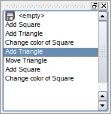

QUndoView Class
The QUndoView class displays the contents of a QUndoStack. More...
| Header: | #include <QUndoView> |
| qmake: | QT += widgets |
| Since: | Qt 4.2 |
| Inherits: | QListView |
This class was introduced in Qt 4.2.
Properties
- cleanIcon : QIcon
- emptyLabel : QString
Public Functions
| QUndoView(QUndoGroup *group, QWidget *parent = nullptr) | |
| QUndoView(QUndoStack *stack, QWidget *parent = nullptr) | |
| QUndoView(QWidget *parent = nullptr) | |
| virtual | ~QUndoView() |
| QIcon | cleanIcon() const |
| QString | emptyLabel() const |
| QUndoGroup * | group() const |
| void | setCleanIcon(const QIcon &icon) |
| void | setEmptyLabel(const QString &label) |
| QUndoStack * | stack() const |
Public Slots
Detailed Description
QUndoView is a QListView which displays the list of commands pushed on an undo stack. The most recently executed command is always selected. Selecting a different command results in a call to QUndoStack::setIndex(), rolling the state of the document backwards or forward to the new command.
The stack can be set explicitly with setStack(). Alternatively, a QUndoGroup object can be set with setGroup(). The view will then update itself automatically whenever the active stack of the group changes.

Property Documentation
cleanIcon : QIcon
This property holds the icon used to represent the clean state.
A stack may have a clean state set with QUndoStack::setClean(). This is usually the state of the document at the point it was saved. QUndoView can display an icon in the list of commands to show the clean state. If this property is a null icon, no icon is shown. The default value is the null icon.
Access functions:
| QIcon | cleanIcon() const |
| void | setCleanIcon(const QIcon &icon) |
emptyLabel : QString
This property holds the label used for the empty state.
The empty label is the topmost element in the list of commands, which represents the state of the document before any commands were pushed on the stack. The default is the string "<empty>".
Access functions:
| QString | emptyLabel() const |
| void | setEmptyLabel(const QString &label) |
Member Function Documentation
QUndoView::QUndoView(QUndoGroup *group, QWidget *parent = nullptr)
Constructs a new view with parent parent and sets the observed group to group.
The view will update itself autmiatically whenever the active stack of the group changes.
QUndoView::QUndoView(QUndoStack *stack, QWidget *parent = nullptr)
Constructs a new view with parent parent and sets the observed stack to stack.
QUndoView::QUndoView(QWidget *parent = nullptr)
Constructs a new view with parent parent.
[slot] void QUndoView::setGroup(QUndoGroup *group)
Sets the group displayed by this view to group. If group is 0, the view will be empty.
The view will update itself autmiatically whenever the active stack of the group changes.
See also group() and setStack().
[slot] void QUndoView::setStack(QUndoStack *stack)
Sets the stack displayed by this view to stack. If stack is 0, the view will be empty.
If the view was previously looking at a QUndoGroup, the group is set to nullptr.
See also stack() and setGroup().
[virtual] QUndoView::~QUndoView()
Destroys this view.
QUndoGroup *QUndoView::group() const
Returns the group displayed by this view.
If the view is not looking at group, this function returns nullptr.
See also setGroup() and setStack().
QUndoStack *QUndoView::stack() const
Returns the stack currently displayed by this view. If the view is looking at a QUndoGroup, this the group's active stack.